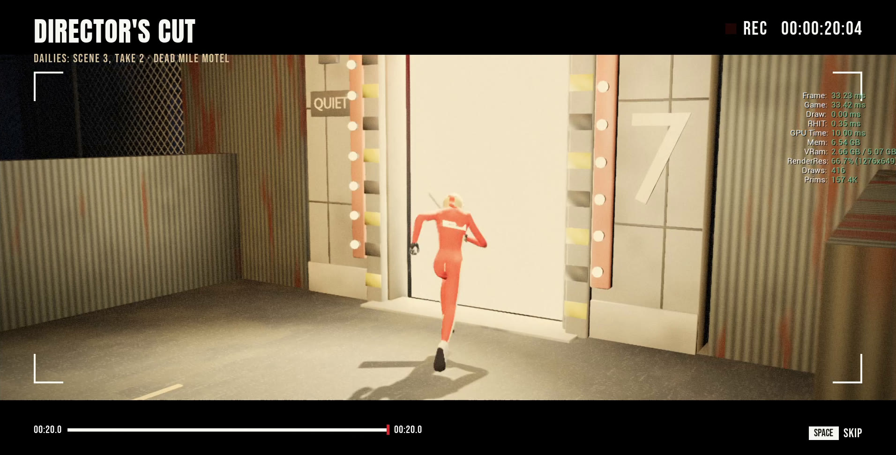

The double stays on its mark
My playtest note said the replay double ran off in directions I never went, then snapped back. The cause was in the animations, not the recording, and the old test was checking the wrong thing.
Day 2, Fri 13 NovHour 36
The replay is the point of the game: clear a scene and watch your take back as a film. This morning I wrote:
"I see my character continuing to run a direction I didn't and snap back often."
Two positions, one test
The game records where you were every frame and plays it back on the stunt double. The recording was right. The double's run and walk clips carry their own movement, called root motion: the animation itself walks the body forward. So on playback the double's body walked metres away from the recorded path while the invisible capsule stayed on it, then snapped back to it every time the clip looped.
The replay test checked the capsule. The capsule was always in the right place. A person watching saw the body.
The second Gameplay session found it at 11:46 and kept the body on the recorded path. The test now checks the body: it stays within 60 cm of where you were. Cuts between cameras are now marked as cuts, so motion blur no longer smears across them.

Not finished
The independent review of these reels still found the replay camera passing through the truck's cab, an opening shot of an empty wall in UFO 01, and the double frozen in its default T-pose for a few seconds in Noir 01. A zombie in red can be mistaken for the double. All four are with their owners for the next block.